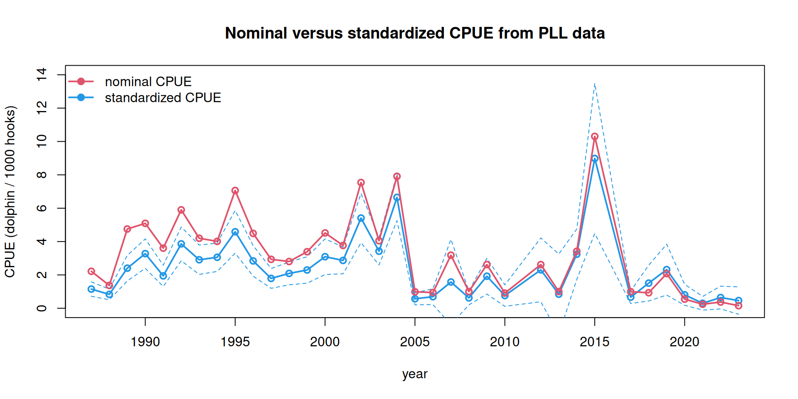
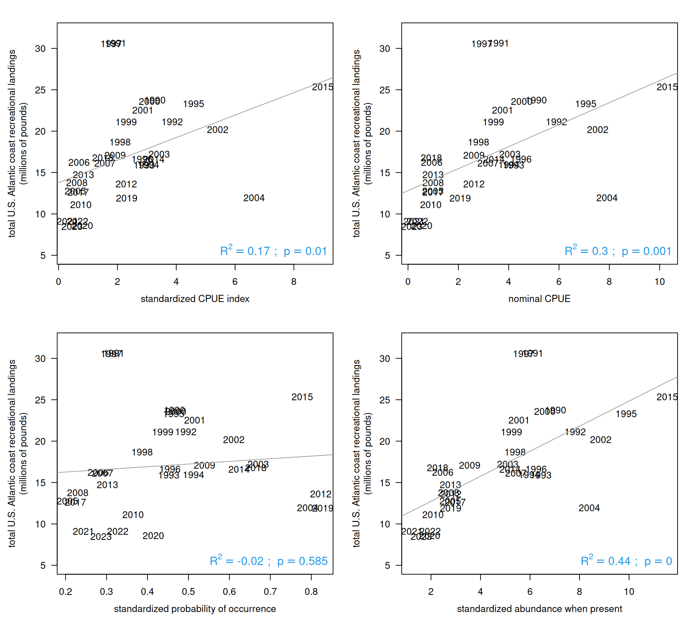

A substantial portion of the U.S. pelagic longline fishery operates in the Caribbean region, and we can analyze the catch rates in this region as a potential predictive index of dolphin abundance in the South Atlantic later in the year. The logbook data are confidential and cannot be shown here, but we show the results of the standardization process. The code for processing the pelagic longline logbook data can be seen in the file “PLL_index.R” and the steps are outlined below.
11.1 Analysis of logbook data
The goal of the analysis is to create a standardized index of relative abundance for dolphin, using wintertime catch rates from the pelagic longline (PLL) fleet. The standardization process removes the potential influence of nuisance factors from the catch data, such as species targeting or differences in gear deployment, so that the index represents the underlying abundance of the fish.
The steps are as follows:
Read in the pelagic longline data which contains set level entries including location of fishing, target species, gear used, other details of the fishing trip and number of dolphin caught, discarded alive, discarded dead, and the total pounds of dolphin kept.
Format the longitude and latitude of the sets into decimal degrees, and find the points that fall in the Caribbean region (we use 76°W - 60°W and 12°N - 23°N as boundaries). Check that subsetting was done correctly, and extract the Caribbean data from the data set.
Inspect the dolphin catch columns (number of dolphin kept, discarded alive and dead). Replace NA values with zeros. Calculate the total dolphin catch as the total kept and discarded. Remove data for which the number of hooks is not reported. Calculate the catch rate as total dolphin caught divided by 1,000 hooks.
Standardize date formatting and add identifiers for month. Index December so that it is included with the winter months of the following year. Subset the data set so that it includes only the winter months (December - February).
Explore the different factors to include in the standardization model, relying on previous literature and best practices for standardizing PLL logbook data. Analyze the number of observations for different gear configurations and target species. Factors considered were: temperature, month, number of hooks between floats, bait type, number of lights between hooks, and species targeted. Temperature was binned in 5-degree increments. Month and hooks between floats were converted to factors. There was little resolution in the data for bait type and number of lights per hook, with similar values across all observations. The only major reported species targeted were dolphin, swordfish and mixed; targeting for other species were only listed in a small number of sets.
Use the delta-lognormal method to create an index of abundance for dolphin, estimated using a generalized linear model approach. The delta model fits separately the: 1) proportion of positive sets, assuming a binomial error distribution, and 2) the mean catch rate of sets where at least one dolphin was caught, assuming a lognormal error distribution. Use a step-wise regression process was used to determine the set of factors that significantly explain the observed variability. Model selection of fixed factors was based on significance with alpha=0.05. Once the final model is determined, calculate the least-squares means from the linear models for the year predictor estimates. The index of abundance is the standardized proportion positive by year multiplied by the standardized abundance when present.
Calculate the deviance explained by each model, the standard errors, and the combined variance for the standardized index.
11.2 Model results
Here we upload the model results and show the standardized index.
The deviance explained by the model is relatively low, and thus the standardized index is similar to the nominal CPUE index. The primary impact of standardization is to lower slightly the index of relative abundance in the earlier years of the time series.
ind <-read.csv("indices/PLL_index.csv")plot(ind$Year, ind$index, type ="l", lwd =2, col =4, main ="Nominal versus standardized CPUE from PLL data",xlab ="year", ylab ="CPUE (dolphin / 1000 hooks)", ylim =c(0, 14))points(ind$Year, ind$index, pch =1, lwd =2, col =4) lines(ind$Year, ind$index -1.96*ind$SE, col =4, lty =2)lines(ind$Year, ind$index +1.96*ind$SE, col =4, lty =2)lines(ind$Year, ind$nominal, col =2, lwd =2)points(ind$Year, ind$nominal, col =2, lwd =2, pch =1)legend("topleft", c("nominal CPUE", "standardized CPUE"), lwd =2, pch =19, col =c(2, 4), bty ="n")

Now we compare the nominal and the standardized index with the Atlantic recreational landings. We experimented with altering the forecasting time period (e.g., Dec - Feb versus Jan - Mar) and also with the latitudinal boundaries (e.g., 70°W versus 76°W ). A smaller bounding box of 70°W resulted in very small sample sizes (<10) for some individual years; extending the bounding box to 76°W to cover fishing activity between Cuba and Hispanola resulted in much higher sample sizes and improved correlations. Including only the winter months (Dec - Feb) also resulted in higher correlations than when spring months were included.
rec <-read.csv("data/recLandings.csv")names(rec)[1] <-"Year"rec$ATL <-rowSums(rec[3:6], na.rm = T)rec <- rec[which(rec$Year >=1990), ]d1 <-merge(rec, ind, by ="Year")lis <-c("index", "nominal", "predpos", "Npres")labs <-c("standardized CPUE index", "nominal CPUE","standardized probability of occurrence", "standardized abundance when present")par(mfrow =c(2, 2), mar =c(4, 5, 2, 1), mgp =c(2.5, 1, 0))for (i in1:4) { j <-which(names(d1) == lis[i])plot(d1[, j], d1$ATL/10^6, col =0, xlab = labs[i], ylim =c(5, 32), las =1,ylab ="total U.S. Atlantic coast recreational landings\n(millions of pounds)")text(d1[, j], d1$ATL/10^6, substr(d1$Year, 1, 4), col =1) out <-lm(d1$ATL/10^6~ d1[, j ])abline(out, col =8)summary(out) r2 <-summary(out)$adj.r.squared p_val <-summary(out)$coefficients[2, 4] p_display <-ifelse(p_val <0.001, "p < 0.001", paste("p =", round(p_val, 3)))legend("bottomright", legend =bquote(R^2== .(round(r2, 2)) ~"; "~ p == .(round(p_val, 3))),bty ="n", cex =1.2, text.col =4)}

Interestingly, the nominal CPUE is more highly correlated with Atlantic recreational landings than the standardized index. However when the standardized index is broken into its two components, we can see that the probability of occurrence is not significantly correlated with the Atlantic landings, while the abundance when present has a highly significant correlation and explains 44% of the variation in the Atlantic landings.